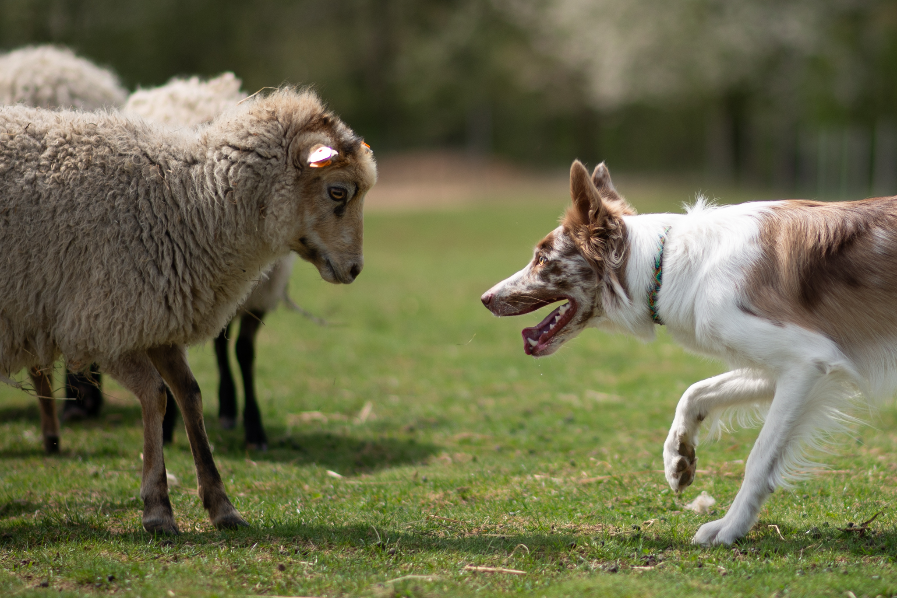

FCI & ISDS Border Collies · Cracow, Poland
Catching
the Sky
About us
duzy
tekst
We believe that breeding is not about producing more dogs. It is about preserving what is worth carrying forward.
Catching the Sky is a small Border Collie kennel focused on health, temperament, structure, movement and the everyday partnership between a dog and its human.
Every decision we make is part of a bigger picture — one that reaches beyond a single litter and into the generations that follow.
Get to know us →
Our dogs
The stars of our home.
podpis
Our story
Follow the stars.
Every chapter becomes a part of the bigger picture.
Catching the Sky